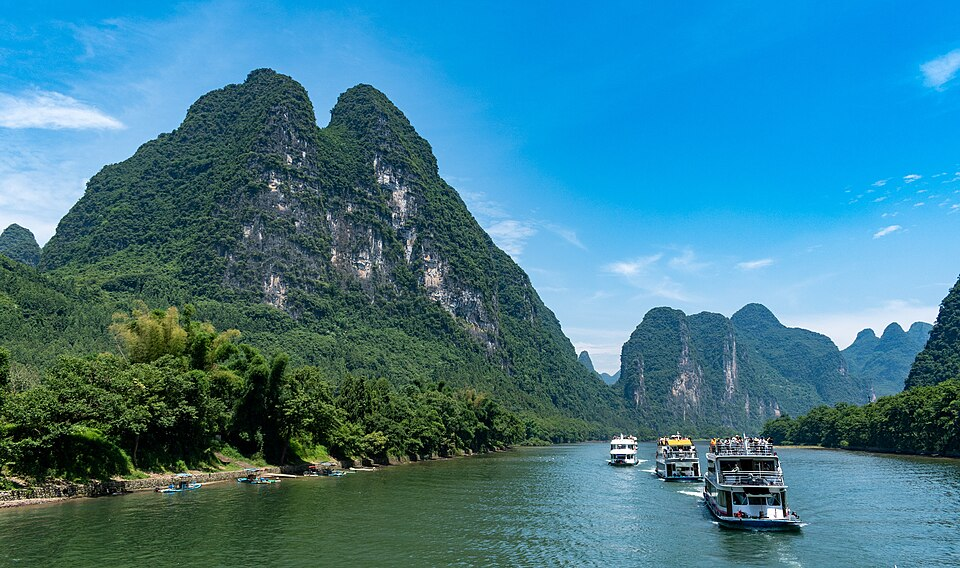

Xingping Ancient Town
Old lanes framed by the karst landscape.
Photo: xiquinhosilva · CC BY 2.0 · sourceYour traditional-village day: ancient lanes, Li River scenery, hanfu styling, and sunset photography.

A visual preview of each stop.
Old lanes framed by the karst landscape.
Photo: xiquinhosilva · CC BY 2.0 · sourceThe dramatic river-and-karst scenery this area is famous for.
Photo: xiquinhosilva · CC BY 2.0 · sourceThe classic landscape associated with the back of the ¥20 note.
Photo: xiquinhosilva · CC BY 2.0 · sourceTraditional styling photographed among old streets and river scenery.
Photo: xiquinhosilva · CC BY 2.0 · source